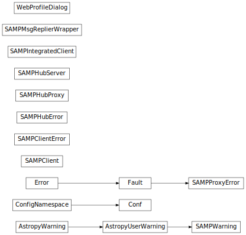

SAMP (Simple Application Messaging Protocol (astropy.vo.samp)¶
Introduction¶
astropy.vo.samp is an IVOA SAMP (Simple Application Messaging Protocol)
messaging system implementation in Python. It provides classes to easily:
- instantiate one or multiple Hubs;
- interface an application or script to a running Hub;
- create and manage a SAMP client.
astropy.vo.samp provides also a stand-alone program samp_hub capable to
instantiate a persistent hub.
SAMP is a protocol that is used by a number of other tools such as
TOPCAT,
SAO Ds9,
and Aladin, which means that it is possible to
send and receive data to and from these tools. The astropy.vo.samp package
also supports the ‘web profile’ for SAMP, which means that it can be used to
communicate with web SAMP clients. See the sampjs library examples for more details.
The following classes are available in astropy.vo.samp:
SAMPHubServer, which is used to instantiate a hub server that clients can then connect to.SAMPHubProxy, which is used to connect to an existing hub (including hubs started from other applications such as TOPCAT).SAMPClient, which is used to create a SAMP clientSAMPIntegratedClient, which is the same asSAMPClientexcept that it has a self-containedSAMPHubProxyto provide a simpler user interface.
Using astropy.vo.samp¶
Reference/API¶
astropy.vo.samp Package¶
This subpackage provides classes to communicate with other applications via the Simple Application Messaging Protocal (SAMP).
Before integration into Astropy it was known as SAMPy, and was developed by Luigi Paioro (INAF - Istituto Nazionale di Astrofisica).
Classes¶
Conf |
Configuration parameters for astropy.vo.samp. |
SAMPClient(hub[, name, description, ...]) |
Utility class which provides facilities to create and manage a SAMP compliant XML-RPC server that acts as SAMP callable client application. |
SAMPClientError |
SAMP Client exceptions. |
SAMPHubError |
SAMP Hub exception. |
SAMPHubProxy() |
Proxy class to simplify the client interaction with a SAMP hub (via the standard profile). |
SAMPHubServer([secret, addr, port, ...]) |
SAMP Hub Server. |
SAMPIntegratedClient([name, description, ...]) |
A Simple SAMP client. |
SAMPMsgReplierWrapper(cli) |
Function decorator that allows to automatically grab errors and returned maps (if any) from a function bound to a SAMP call (or notify). |
SAMPProxyError(faultCode, faultString, **extra) |
SAMP Proxy Hub exception |
SAMPWarning |
SAMP-specific Astropy warning class |
WebProfileDialog |
A base class to make writing Web Profile GUI consent dialogs easier. |
Class Inheritance Diagram¶
